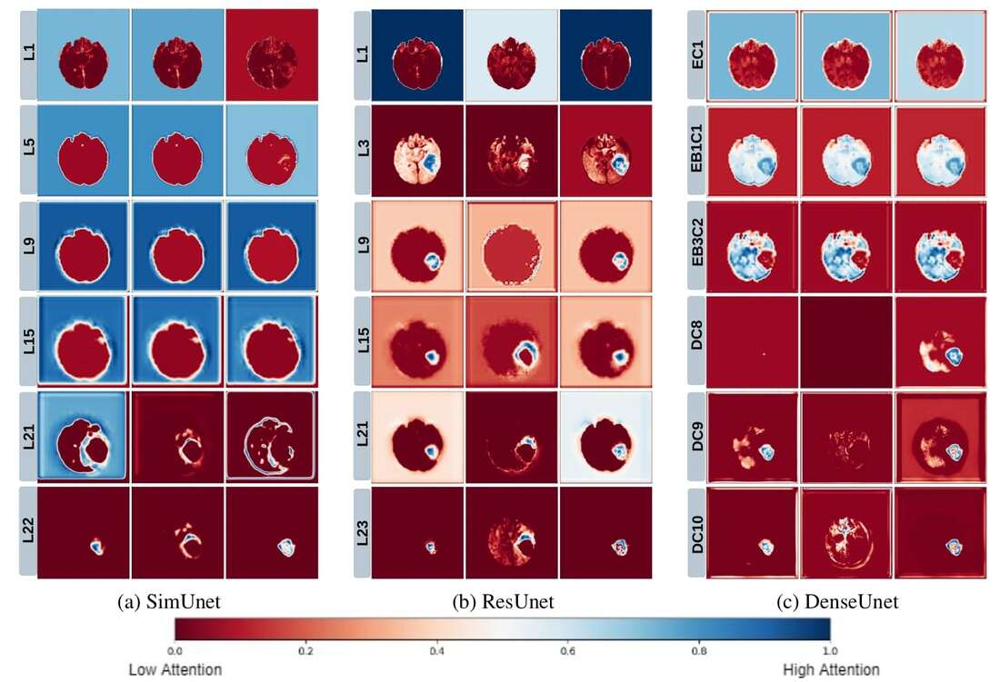

Related Publications:
(1) Parth Natekar, Avinash Kori, and Ganapathy Krishnamurthi. "Demystifying Brain Tumour Segmentation Networks: Interpretability and Uncertainty Analysis." Frontiers in Computational Neuroscience 14 (2020): 6. (Link)
(2) Parth Natekar, "Interpreting Deep Neural Networks for Medical Image Analysis." Dual Degree Thesis. (Link)
(1) Parth Natekar, Avinash Kori, and Ganapathy Krishnamurthi. "Demystifying Brain Tumour Segmentation Networks: Interpretability and Uncertainty Analysis." Frontiers in Computational Neuroscience 14 (2020): 6. (Link)
(2) Parth Natekar, "Interpreting Deep Neural Networks for Medical Image Analysis." Dual Degree Thesis. (Link)
Deep Learning has shown great practical success in a number of tasks in the medical domain. However, for Deep Learning to be fully
integrated in medical practice, it needs to be transparent and trustworthy. We attempt to elucidate the process that deep neural networks
take to accurately segment brain tumors and classify the severity of diabetic retinopathy. Mainly, this work is related to the following areas:
(1) Disentanged Representations
(2) Uncertainty estimation
(3) Hierarchy of model decision making and Neuroscientific parallels
(4) Extracting internal model visualizations
integrated in medical practice, it needs to be transparent and trustworthy. We attempt to elucidate the process that deep neural networks
take to accurately segment brain tumors and classify the severity of diabetic retinopathy. Mainly, this work is related to the following areas:
(1) Disentanged Representations
(2) Uncertainty estimation
(3) Hierarchy of model decision making and Neuroscientific parallels
(4) Extracting internal model visualizations
It is my belief that in the medical domain:
Efficient Deep Learning + Interpretability + Inclusion of medical professionals = Transparent and Trustworthy AI
Efficient Deep Learning + Interpretability + Inclusion of medical professionals = Transparent and Trustworthy AI

Results of our trained brain tumor segmentation network on the BraTS Dataset
Our experiments reveal an organization in these networks consistent with neuroscience experiments on the how the human brain processes information, which might help in the integration of these networks in the medical domain. We aim to provide a 'trace of inference steps' on a concept-level to doctors along with additional uncertainty information to create more human-compatible AI.
|
1. Disentangled Representations
We use network dissection to explore the disentanglement of representations inside the network. The presence of disentangled concepts has been shown before in the context of natural images. We show that brain-tumor segmentation models learn both explicit disentangled concepts (i.e. concepts the model has been trained to learn, like tumor regions) as well as implicit disentangled concepts (i.e. concepts which the model has not been trained to learn, such as gray and white matter and tumor boundary). This means that we can make attributions based on function to the network at a filter level—indicating a sort of functional specificity in the network i.e., individual filters might be specialized to learn separate concepts. |

Dissection Analysis Reveals Functional Modularity and Disentangled Representations within the Network
|
|
2. Uncertainty Estimation
We use Bayesian Dropout to provide uncertainty estimates for the outputs of our models (shown in red in the image). We find that misclassified tumor regions are often associated with high uncertainty, which indicates that an efficient pipeline which combines deep networks and fine-tuning by medical experts can be used to get accurate segmentations. |

Are you sure?
We ask the network to quantify its uncertainty
|
|
3. Hierarchy of model decision making and Neuroscientific parallels
We use a Grad-CAM based approach to understand how how spatial attention of a network changes over layers. We find that that models take a largely top-down approach to localizing tumors - they first pay attention to the entire brain, then the general tumor region, and finally converge on the actual finer segmentation. This is consistent with theories on visual perception in humans–the global-to-local nature of visual perception has been documented, and is called the Global Precedence Effect. |
 We extract the hierarchy of attention inside the model
|
|
4. Extracting Visual Representations of Internal Concepts
We use activation maximization to visualize input images which maximally activate filters in the network. We find that regularizing the input image leads to the formation of distinct shapes and patterns in the image. We are working to evaluate these from a medical perspective. |

|